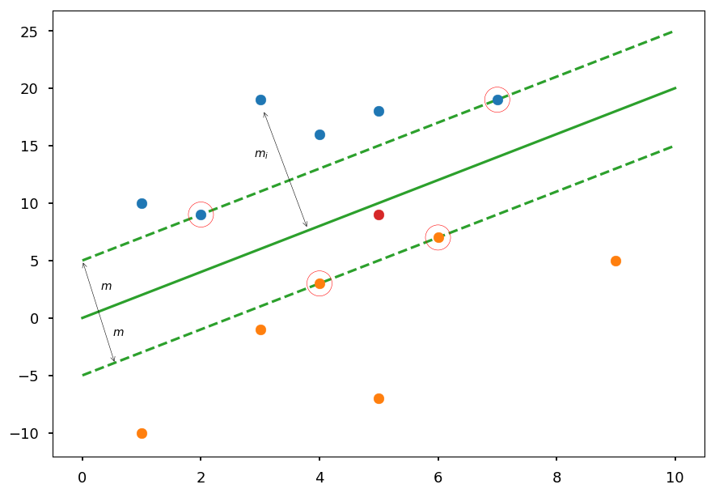
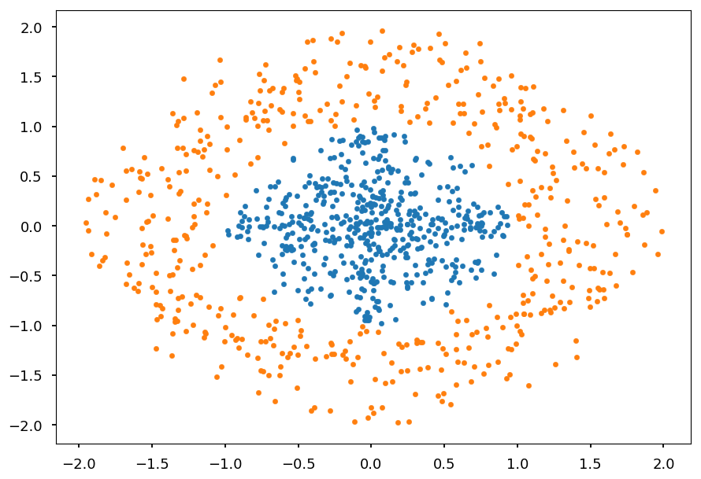
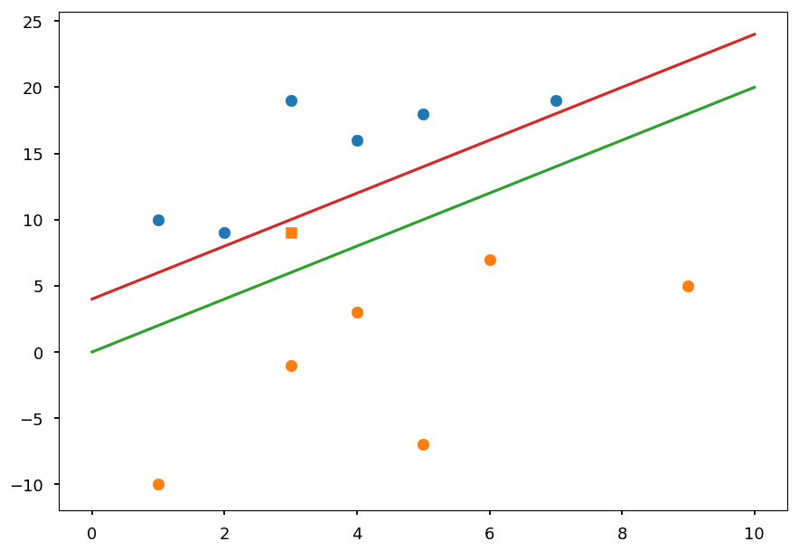
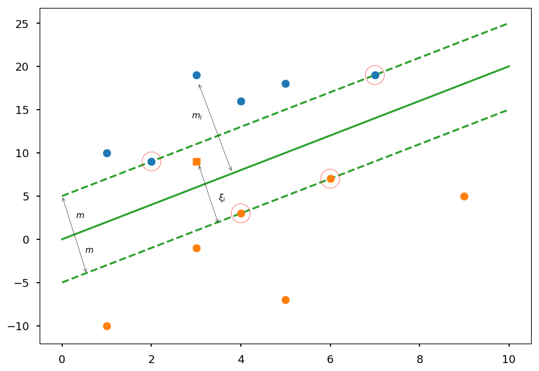
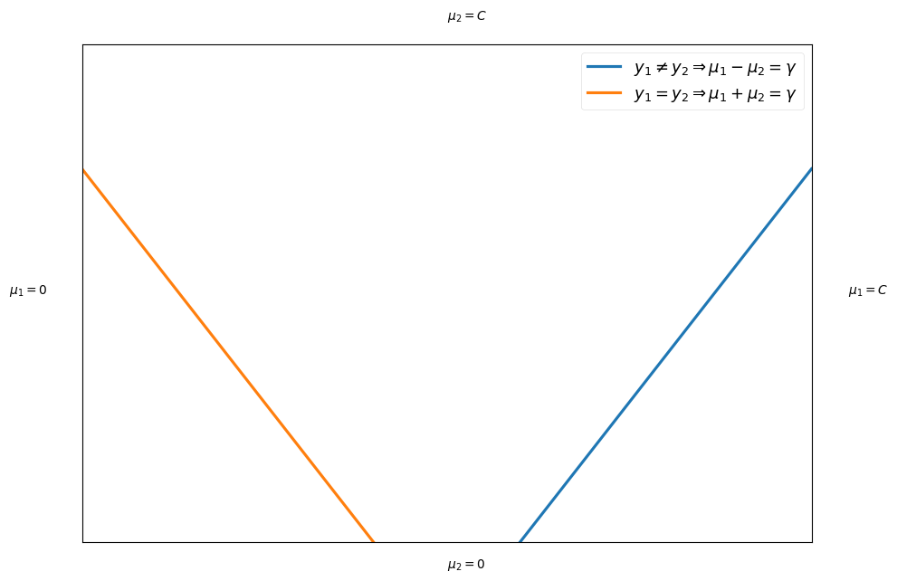
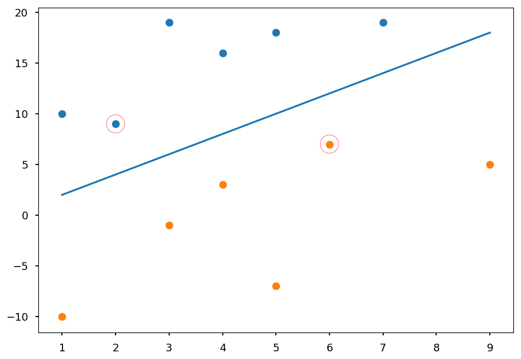
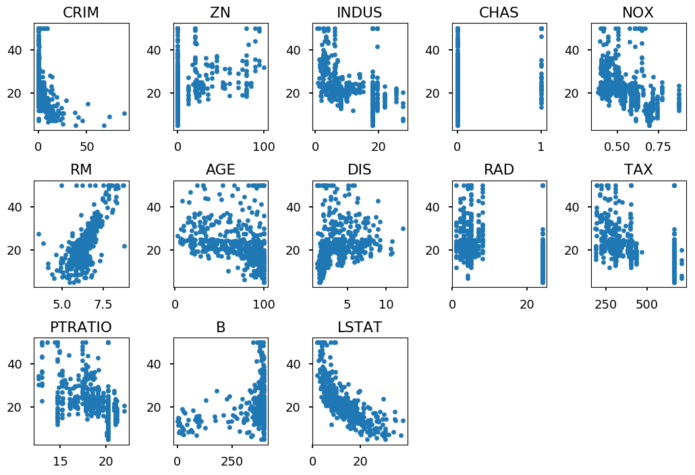
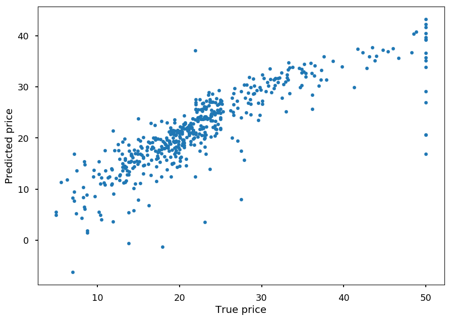

Support Vector Machine¶
-
Support vector machine (SVM) is a binary linear classifier
-
There are tricks to make SVM able to solve non-linear problems
-
There are extensions which allows using SVM to multiclass classification or regression
-
SVM is a supervised learning algorithm
-
There are extensions which allows using SVM for (unsupervised) clustering
Linear SVM¶
-
Lets consider a training dataset of N samples (\vec x_1, y_1), \cdots, (\vec x_N, y_N)
-
\vec x_i is D-dimensional vector representing features
-
y_i is a class label, for convenience y_i = \left\{-1, 1\right\}
-
At this point we assume that classes are linearly separable
-
For visualization purpose lets use D = 2
# our standard imports: matplotlib and numpy import matplotlib.pyplot as plt import numpy as np # just to overwrite default colab style plt.style.use('default') plt.style.use('seaborn-talk')
# class I X01 = [(2, 9), (7, 19), (1, 10), (3, 19), (4, 16), (5, 18)] # class II X02 = [(4, 3), (6, 7), (1, -10), (3, -1), (9, 5), (5, -7)] plt.xlim([0, 10]) plt.scatter(*(zip(*X01))) plt.scatter(*(zip(*X02)));

-
In general we want to find a hyperplane which separates two classes
-
In the example above is just a line
plt.scatter(*(zip(*X01))) plt.scatter(*(zip(*X02))) plt.plot([0, 10], [0, 15], 'C2-');

-
Once a hyperplane is found, the classification is straightforward
-
In this case, everything above a line is classified as a blue point and below as an orange point
-
However, there is infinitely many possible lines / hyperplanes
plt.scatter(*(zip(*X01))) plt.scatter(*(zip(*X02))) plt.scatter(5, 9, c='C3') # test point plt.plot([0, 10], [2, 22], 'C4-'); plt.plot([0, 10], [0, 15], 'C2-');

-
On the plot above two possible lines which correctly classify all training data are drawn
-
The red point represents a test sample
-
Using "by eye" method one could say it is rather orange than blue
-
The final predictions depends on the choice of a line though
-
Thus, one need a criterion to choose the best line / hyperplane
-
SVM chooses the hyperplane which is maximally far away from any training point
plt.plot([0, 10], [0, 20], 'C2-', zorder=0) plt.plot([0, 10], [5, 25], 'C2--', zorder=0) plt.plot([0, 10], [-5, 15], 'C2--', zorder=0) plt.scatter(5, 9, c='C3') # test point plt.annotate('', (0,5), (0.55, -4), arrowprops=dict(arrowstyle='<->')) plt.text(0.5, -1.5, '$m$') plt.text(0.3, 2.5, '$m$') plt.annotate('', (3.05,18.1), (3.8, 7.75), arrowprops=dict(arrowstyle='<->')) plt.text(2.9, 14, '$m_i$') plt.scatter(*(zip(*X01)), zorder=1) plt.scatter(*(zip(*X02)), zorder=1) sv = X01[:2] + X02[:2] plt.scatter(*(zip(*sv)), zorder=1, facecolors='none', edgecolors='r', s=500);

-
The goal is to maximize the margin 2m
-
Please note, that the margin is given by the distance of closest data point to the hyperplane
-
Which means, that the classifier depends only on a small subset of training data, which are called support vectors
Hard margin¶
-
Any hyperplane can be defined by an intercept term b and a normal vector \vec w (which is usually called weights in machine learning)
-
All the points \vec x on the hyperplane satisfy \vec w \cdot \vec x + b = 0
-
If \vec w \cdot \vec x + b~{> \choose <}~0 the point is on the \text{one} \choose \text{other} side
-
We can easily defined the linear classifier
f(\vec x) = \text{sign}\left(\vec w \cdot \vec x + b\right)
-
That is why we wanted class labels to be -1 or 1 (instead more standard 0 and 1)
-
All we need is to find weights
Functional margin¶
-
Lets define functional margin of hyperplane (\vec w, b) w.r.t. a training sample (\vec x_i, y_i) as
\hat m_i = y_i\cdot \left(\vec w \cdot \vec x_i + b\right)
-
It is only positive if the training sample label has the same sign as prediction
-
The magnitude tells us somewhat about the confidence of a prediction
-
But please note, that we can choose arbitrary factor k and \text{sign}\left(\vec w \cdot \vec x + b\right) = \text{sign}\left(k\cdot\vec w \cdot \vec x + k\cdot b\right)
-
Function margin w.r.t. the whole training dataset is the smallest one
\hat m = \min\limits_{i = 1, \cdots, N}\hat m_i
Geometric margin¶
-
Lets m_i be a distance from a training point \vec x_i to a decision boundary / hyperplane (\vec w, b)
-
Lets \vec x_h be a point on a hyperplane closest to \vec x_i
-
Shortest distance must be peprendicular to a hyperplane (so parallel to \vec w)
-
We can express \vec x_h by
\vec x_h = \vec x_i - y_i\cdot m_i\cdot \frac{\vec w}{|\vec w|}
-
Because \vec x_h lies on a hyperplane it must fulfill \vec w \cdot \vec x_h + b = 0, thus
\vec w\left(\vec x_i - y_i\cdot m_i\cdot \frac{\vec w}{|\vec w|}\right) + b = 0
-
Pretty straightforward to solve for m_i
m_i = y_i\frac{\vec w\cdot \vec x_i + b}{|\vec w|} = \frac{\hat m_i}{|\vec w|}
-
As before geometric margin w.r.t. the whole training dataset is the smallest one
m = \min\limits_{i = 1, \cdots, N} m_i = \frac{\hat m}{|\vec w|}
-
Please note, that m does not change when weights are scaled
-
\hat m = m for |\vec w| = 1
The optimal margin¶
-
We want to find the maximum geometric margin m
-
But with a constraint that for every sample outside the margin
\left.\begin{array}{cc}\text{maximize}_{w, b, m} & m\\\text{subject to} & m_i \geq m\end{array}\right.
-
As we discussed, we can choose any normalization of normal vector |\vec w| as it does not change the value of m_i = y_i\frac{\vec w\cdot \vec x_i + b}{|\vec w|}
-
Lets choose |\vec w| = \frac{1}{m}, so
\left.\begin{array}{cc}\text{maximize}_{w, b} & \frac{1}{|\vec w|}\\\text{subject to} & |\vec w|\cdot m_i \geq 1\end{array}\right.
-
Since maximizing |\vec w|^{-1} means the same as minimizing |\vec w|, we can finally write
\left.\begin{array}{cc}\text{minimize}_{w,b} & \frac{1}{2}|\vec w|^2\\\text{subject to} & \hat m_i \geq 1\end{array}\right.
-
Please note that we choose |\vec w|^2 over |\vec w| to avoid square root, and \frac{1}{2} is for math convenience
-
Now, all we need is to optimize quadratic function over variables subject to linear constraints (quadratic programming)
Lagrange multipliers¶
-
Lagrange multipliers is the common method used to solve contrained optimization problems
-
Lets consider the following problem (with equality constraint):
\left.\begin{array}{cc}\text{minimize} & f(\vec x)\\\text{subject to} & g(\vec x) = 0\end{array}\right.
-
Please note, that one could also consider g(\vec x) = c, where c is constant (then g'(\vec x) = g(\vec x) - c = 0)
-
Lagrange multiplier theorem says that at constrained optimum (if exists) \nabla f will be parallel to \nabla g, so
\nabla f(\vec x) = \lambda\nabla g(\vec x)
-
\lambda - a Lagrange multiplier
How it works¶
- Lets consider the following problem:
\left.\begin{array}{cc}\text{minimize} & f(x, y) = x^2 + y^2\\\text{subject to} & g(x, y) = x\cdot y - 1 = 0\end{array}\right.
def flc(c, n=100): """Level curves of objective functions""" return np.array([(c * np.cos(ang), c * np.sin(ang)) for ang in np.linspace(0, 2*np.pi, n)]) def g(n=100): """Constraint""" return np.array([(x, 1./x) for x in np.linspace(0.1, 2.5, n)]) ##### PLOT SETTINGS ##### plt.figure(figsize=(8, 8)) plt.xlim([-2.5, 2.5]) plt.ylim([-2.5, 2.5]) plt.grid(color='0.5', linestyle='--', linewidth=0.5) ##### LEVEL CURVES OF f(x, y) ##### for c in (0.2, 0.6, 1, 1.8, 2.2): plt.plot(*flc(c).T, color='C0') plt.plot(*flc(np.sqrt(2)).T, color='C0', label='$f(x, y) = c$') ##### CONSTRAINTS ##### plt.plot(*g().T, color='C1', label='$g(x, y) = 0$') plt.plot(*-g().T, color='C1') ##### INTERSECTIONS ##### plt.scatter(1, 1, c='C2', zorder=4) plt.scatter(np.sqrt(0.345), np.sqrt(1/0.345), c='C3', zorder=4) plt.legend();

-
Blue lines represent the level curves of the objective function (f(x, y) = const)
-
Orange lines represent the constraints (g(x, y) = 0)
-
Lets first consider the case that blue and orange curves are not tangent (red point)
-
going along the constraint one direction would result in the decrease of the objective function
-
while going in another direction would result in the increase of the objective function
-
thus, this point can not be an optimum
-
-
The only possibility is that a constrained optimum is where curves are tanget (it still may not be the case, but at least it could be)
Lagrangian¶
-
In general, there may be many constraints:
\left.\begin{array}{cc}\text{minimize} & f(\vec x)\\\text{subject to} & g_i(\vec x) = 0, \hspace{5pt} i = 0,\cdots, M\end{array}\right.
-
Then, there are M Lagrange multipliers \lambda_i
-
It is convenient to define Lagrangian:
\mathcal{L}(\vec x, \lambda) = f(\vec x) + \sum\limits_{i=1}^M\lambda_ig_i(\vec x)
-
and solve:
\nabla_{x_1,\cdots, x_n, \lambda_1,\cdots, \lambda_M} \mathcal{L}(\vec x, \lambda) = 0
-
which is equivalent to:
\nabla f(\vec x) = \sum\limits_{i=1}^M\lambda_i\nabla g_i(\vec x)
g_1(\vec x) = \cdots = g_M(\vec x) = 0
-
The optimum (if exists) is always a saddle point of the Lagrangian
-
On the one hand, we want to minimize the Lagrangian over \vec x
-
And on the other hand, we want to maximize the Lagrangian over \lambda_i
-
Example¶
-
Lets consider the objective function f(x) = x^2 with a constraint g(x) = x - 1 = 0
-
The Lagrangian is given by:
\mathcal{L}(x, \lambda) = x^2 + \lambda\cdot (x - 1)
\frac{\partial\mathcal{L}}{\partial x} = 2x + \lambda = 0
\frac{\partial\mathcal{L}}{\partial\lambda} = x - 1 = 0
-
It has a saddle point at x = 1 and p = -2
from mpl_toolkits.mplot3d import Axes3D from matplotlib import cm ax = plt.figure().add_subplot(111, projection=Axes3D.name) X, Y = np.meshgrid(np.linspace(-1, 3, 50), np.linspace(-5, 1, 50)) L = X**2 + Y * (X - 1) ax.plot_surface(X, Y, L, cmap=cm.hsv) ax.view_init(elev=45, azim=120) ax.set_xlabel('$x$', labelpad=20) ax.set_ylabel('$\lambda$', labelpad=20) ax.set_zlabel('$\mathcal{L}$', labelpad=10);

Lagrange duality¶
-
Lets consider the optimization problem with inequality constraints:
\left.\begin{array}{cc}\text{minimize} & f(\vec x)\\\text{subject to} & g_i(\vec x) \leq 0, \hspace{5pt} i = 0,\cdots, M\\\text{} & h_i(\vec x) = 0, \hspace{5pt} i = 0,\cdots, N\end{array}\right.
-
We will call it the primal optimization problem and define generalized Lagrangian:
\mathcal{L}(\vec x, \mu, \lambda) = f(\vec x) + \sum\limits_{i=1}^M\mu_ig_i(\vec x) + \sum\limits_{i=1}^N\lambda_ih_i(\vec x)
-
with the additional restriction that \mu_i \geq 0
-
if i-th constraint is fulfilled, making \mu_i more positive decrease the Lagrangian
-
making \mu_i negative is not allowed
-
-
Please note, that in the case of constraints g_i \geq 0, the restriction is \mu_i \leq 0
-
The task can be expressed in terms of minimizing the following function:
\theta_P(\vec x) = \left\{\begin{array}{cc}f(\vec x) & \text{if x satisfies primal constraints} \\ \infty & \text{otherwise}\end{array}\right. = \max\limits_{\mu, \lambda; \mu_i \geq 0}\mathcal{L}(\vec x, \mu, \lambda)
-
Thus, we can write the final task in the form:
\min\limits_{\vec x}\theta_P(\vec x) = \min\limits_{\vec x}\max\limits_{\mu, \lambda; \mu_i \geq 0}\mathcal{L}(\vec x, \mu, \lambda)
-
Now, lets consider the following "reversed" task:
\max\limits_{\mu, \lambda; \mu_i \geq 0}\min\limits_{\vec x}\mathcal{L}(\vec x, \mu, \lambda) = \max\limits_{\mu, \lambda; \mu_i \geq 0}\theta_D(\mu, \lambda)
-
\theta_D(\mu, \lambda) is known as the dual function and the maximizing it is called the dual problem
-
\theta_D(\mu, \lambda) is a concave function (becasue Lagrangian is affine, i.e. linear in multipliers) - maximing \theta_D is a convex optimisation problem
-
How it is related to the primal problem:
\mathcal{L}(\vec x, \mu, \lambda) \leq \theta_P(\vec x)
\min\limits_{\vec x}\mathcal{L}(\vec x, \mu, \lambda) = \theta_D(\mu, \lambda) \leq \min\limits_{\vec x}\theta_P(\vec x)\equiv p^*
d^* \equiv \max\limits_{\mu, \lambda; \mu_i \geq 0}\theta_D(\mu, \lambda) \leq p^*
-
Thus, the optimum of the dual problem d^* is a lower bound for the optimum of the primal problem p^* (known as weak duality)
-
The difference p^* - d^* is known as the duality gap
-
If the gap is zero (p^* = d^*) we have strong duality
-
If the optimization problem is convex and (strictly) feasible (i.e. there is \vec x which satisfies all constraints) strong duality holds, so there must exist \vec x^*, \mu^*, \lambda^*, so that \vec x^* is the solution of the primal problem and \mu^* and \lambda^* are solutions of the dual problem, and
p^* = d^* = \mathcal{L}(\vec x^*, \mu^*, \lambda^*)
KKT conditions¶
-
Moreover, \vec x^*, \mu^*, \lambda^* satisfy the Karush-Kuhn-Tucker (KKT) conditions
-
Stationarity
\nabla_{\vec x} \mathcal{L}(\vec x^*, \mu^*, \lambda^*) = 0
-
Primal feasibility
g_i(\vec x^*) \leq 0, \hspace{10pt} h_i(\vec x^*) = 0
-
Dual feasibility
\mu_i^* \geq 0
-
Complementary slackness (or dual complementarity)
\mu_i^*\cdot g_i(\vec x^*) = 0
-
Why the last one - for strong duality:
f(\vec x^*) = \theta_D(\mu^*, \lambda^*) = \min\limits_{\vec x}\mathcal{L}(\vec x, \mu^*, \lambda^*) \leq f(\vec x^*) + \sum\limits_{i=1}^M\mu_i^*\cdot g_i(\vec x^*) + \sum\limits_{i=1}^N\lambda_i^*\cdot h_i(\vec x ^*) \leq f(\vec x^*)
-
The last inequality holds beacause \sum\limits_{i=1}^M\mu_i^*\cdot g_i(\vec x^*) \leq 0
-
Since f(\vec x^*) must be equal to f(\vec x^*) these inequalities are in fact equalities, so \sum\limits_{i=1}^M\mu_i^*\cdot g_i(\vec x^*) = 0
-
Because \mu_i \geq 0 and g_i \leq 0 we get the complementary slackness condition: \mu_i^*\cdot g_i(\vec x^*) = 0
-
If \vec x^*, \mu^*, \lambda^* satisfy KKT conditions, then they are primal and dual solutions
Optimal margin¶
-
Lets back to our original optimization problem:
\left.\begin{array}{cc}\text{minimize}_{w,b} & \frac{1}{2}|\vec w|^2\\\text{subject to} & y_i\cdot \left(\vec w \cdot \vec x_i + b\right) \geq 1\end{array}\right.
-
Lets rewrite the constraints in the form: g_i(\vec w) = - y_i\cdot \left(\vec w \cdot \vec x_i + b\right) + 1 \leq 0
-
Please note, that because of the complementary slackness condition, \mu_i > 0 only for the training examples (\vec x_i) that have functional margin equal to one (support vectors)
-
Lets write the Langrangian for this problem:
\mathcal{L}(\vec w, b, \mu) = \frac{1}{2}|\vec w|^2 - \sum\limits_{i=1}^M\mu_i\cdot \left[y_i\cdot\left(\vec w \cdot \vec x_i + b\right) - 1\right]
Dual problem¶
-
To find the dual form of the problem we need to minimize the Lagrangian over \vec w and b:
\nabla_{w}\mathcal{L}(\vec w, b, \mu) = \vec w - \sum\limits_{i=1}^M\mu_iy_i\vec x_i = 0 \Rightarrow \vec w = \sum\limits_{i=1}^M\mu_iy_i\vec x_i
-
And for the intercept term:
\frac{\partial}{\partial b}\mathcal{L}(\vec w, b, \mu) = \sum\limits_{i=1}^M\mu_iy_i = 0
-
It is straightforawrd to show, that using two above equations one can obtain:
\nabla_{w}\mathcal{L}(\vec w, b, \mu) = \sum\limits_{i=1}^M\mu_i - \frac{1}{2}|\vec w|^2 = \sum\limits_{i=1}^M\mu_i - \frac{1}{2}\sum\limits_{i,j=1}^My_iy_j\mu_i\mu_j\cdot\left(\vec x_i\cdot \vec x_j\right)
-
By examing the dual form the optimization problem is expressed in terms of the inner product of input feature vectors:
\left.\begin{array}{cc}\text{maximize}_{\mu} & \sum\limits_{i=1}^M\mu_i - \frac{1}{2}\sum\limits_{i,j=1}^My_iy_j\mu_i\mu_j\cdot\left<\vec x_i, \vec x_j\right>\\\text{subject to} & \mu_i \geq 0 \\ & \sum\limits_{i=1}^M\mu_iy_i = 0\end{array}\right.
Non-linear SVM¶
-
SVM can be applied to non-linear problems using the kernel trick
-
However, before we go there, lets consider a simple non-linear problem
Example¶
-
Lets consider two classes of 2D points:
-
inside a circle
-
outside a circle
-
def generate_circle_data(R1=0, R2=1, N=500): """Generate N points in a circle for radius range (R1, R2)""" r = lambda: R1 + np.random.random() * (R2 - R1) return np.array([(r() * np.cos(ang), r() * np.sin(ang)) for ang in np.linspace(0, 2*np.pi, N)]) C01 = generate_circle_data() C02 = generate_circle_data(1, 2) plt.scatter(*C01.T, marker='.') plt.scatter(*C02.T, marker='.');

-
There is no way to find a line which separates these classes
-
But would it be possible to add another dimension and find a plane?
-
Lets consider a feature mapping \phi which maps original attributes:
\phi(x, y) = \left[\begin{array}{c} x \\ y \\ x^2 + y^2\end{array}\right]
from mpl_toolkits.mplot3d import Axes3D from matplotlib import cm ax = plt.figure().add_subplot(111, projection=Axes3D.name) Z01 = np.array([x**2 + y**2 for x, y in C01]) Z02 = np.array([x**2 + y**2 for x, y in C02]) ax.scatter(*C01.T, Z01, cmap=cm.hsv) ax.scatter(*C02.T, Z02, cmap=cm.hsv) ax.view_init(elev=15, azim=60)

-
The new dataset is a linear problem and can be easily solved with SVM
-
All we need is to replace (in the dual formulation): \left<\vec x_i, \vec x_j\right> \rightarrow \left<\phi(\vec x_i), \phi(\vec x_j)\right> = \phi^T(\vec x_i)\phi(\vec x_j)
Kernel trick¶
-
Lets define the kernel (for given feature mapping \phi) as
K(\vec x_i, \vec x_j) = \phi^T(\vec x_i)\phi(\vec x_j)
-
Thus, the optimization problem we are trying to solve now is:
\left.\begin{array}{cc}\text{maximize}_{\mu} & \sum\limits_{i=1}^M\mu_i - \frac{1}{2}\sum\limits_{i,j=1}^My_iy_j\mu_i\mu_j\cdot K(\vec x_i, \vec x_j)\\\text{subject to} & \mu_i \geq 0 \\ & \sum\limits_{i=1}^M\mu_iy_i = 0\end{array}\right.
-
The trick is now, that we do not have to calculate (or even know) the mapping \phi, which could be in general very expensive
-
The classifier was deinfed as:
\hat y = \text{sign}\left(\vec w \cdot \vec x + b\right)
-
and its dual form is:
\hat y = \text{sign}\left(\sum\limits_{i=1}^M \mu_iy_i\left<\vec x_i, \vec x\right> + b\right)
-
and can be now rewritten in the form:
\hat y = \text{sign}\left(\sum\limits_{i=1}^M \mu_iy_iK(\vec x_i, \vec x) + b\right)
Example¶
-
Lets consider the feature mapping \phi (in 3D):
\phi(\vec x) = \left[\begin{array}{c} x_1x_1 \\ x_1x_2 \\ x_1x_3 \\ x_2x_1 \\ x_2x_2 \\ x_2x_3 \\ x_3x_1 \\ x_3x_2 \\ x_3x_3\end{array}\right]
-
Calculating \phi(\vec x), where \vec x \in \mathcal{R}^N, requires O(n^2) time
-
The related kernel is given by:
K(\vec x_i, \vec x_j) = \left<x_i, \vec x_j\right>^2
-
requires only O(n) time
Mercer theorem¶
-
Having some function K, how can we tell if it is a valid kernel?
-
For a valid kernel, there must exist a feature mapping \phi, so that K(\vec x_i, \vec x_j) = \phi^T(\vec x_i)\phi(\vec x_j)
-
Lets define the kernel matrix K_{ij} = K(\vec x_i, \vec x_j)
-
If K is a valid kernel the corresponding matrix must be symmetric: K_{ij} = \phi^T(\vec x_i)\phi(\vec x_j) = \phi^T(\vec x_j)\phi(\vec x_i) = K_{ji}
-
Moreover, K must be positive semi-definite (K \geq 0):
z^TKz = \sum\limits_i\sum\limits_jz_iK_{ij}z_j = \sum\limits_i\sum\limits_jz_i\phi^T(\vec x_i)\phi(\vec x_j)z_j = \sum\limits_i\sum\limits_j\sum\limits_kz_i\phi_k(\vec x_i)\phi_k(\vec x_j)z_j = \sum\limits_k\left(\sum\limits_iz_i\phi_k(\vec x_i)\right)^2 \geq 0
-
Mercer theorem
Let $K: \mathcal{R}^n\times \mathcal{R}^N \rightarrow \mathcal{R}$ be given. Then, for $K$ to be a valid kernel, it is necessary and **sufficient** that for any $\left\{x_1, \cdots x_m\right\}$, the corresponding kernel matrix is symmetric positive semi-definite.
Kernel examples¶
-
Gaussian kernel
K(\vec x, \vec y) = \exp\left(-\frac{||\vec x - \vec y||}{2\sigma^2}\right)
-
Polynomial kernel
K(\vec x, \vec y) = \left(\vec x \cdot \vec y + c\right)^d
-
Sigmoid kernel
K(\vec x, \vec y) = \tanh\left(a\vec x \cdot \vec y + c\right)
Soft margin¶
-
So far, everything was considered with the assumption that data is (linearly) separable
-
Mapping to a high-dimensional feature space may make data separable, but it can not guarantee that
-
Also, due to some noise in data, some outliers may lead to overfitting
-
Lets consider the example below
plt.plot([0, 10], [0, 20], 'C2-', zorder=0) plt.plot([0, 10], [4, 24], 'C3-', zorder=0) plt.scatter(3, 9, c='C1', marker=',') plt.scatter(*(zip(*X01)), zorder=1) plt.scatter(*(zip(*X02)), zorder=1);

-
The green line represents the optimal decision boundary if the orange square point is not included
-
The red line represents the case when the outlier is considered
-
Including the extra point drastically changes the result
-
The idea behind the soft margin is to allow some points to lie of the wrong side of a decision boundary
plt.plot([0, 10], [0, 20], 'C2-', zorder=0) plt.plot([0, 10], [5, 25], 'C2--', zorder=0) plt.plot([0, 10], [-5, 15], 'C2--', zorder=0) plt.scatter(3, 9, c='C1', marker=',') plt.annotate('', (3.05,8.7), (3.5, 1.75), arrowprops=dict(arrowstyle='<->')) plt.text(3.5, 4.5, '$\\xi_i$') plt.annotate('', (0,5), (0.55, -4), arrowprops=dict(arrowstyle='<->')) plt.text(0.5, -1.5, '$m$') plt.text(0.3, 2.5, '$m$') plt.annotate('', (3.05,18.1), (3.8, 7.75), arrowprops=dict(arrowstyle='<->')) plt.text(2.9, 14, '$m_i$') plt.scatter(*(zip(*X01)), zorder=1) plt.scatter(*(zip(*X02)), zorder=1) sv = X01[:2] + X02[:2] plt.scatter(*(zip(*sv)), zorder=1, facecolors='none', edgecolors='r', s=500);

Regularization¶
-
Regularization is a common technique to prevent overfitting (more about that next week)
-
Lets reformulate the original optimization problem:
\left.\begin{array}{cc}\text{minimize}_{w,b} & \frac{1}{2}|\vec w|^2 + C\sum \limits_i\xi_i\\\text{subject to} & \hat y_i\cdot\left(\vec w \cdot \vec x + b\right) \geq 1 - \xi_i \\ & \xi_i \geq 0\end{array}\right.
-
We now allow to have a functional margin less than 1, but if a training point has functional margin 1 - \xi_i we would pay a cost of the objective function being increased by C\xi_i
-
Thus, C controls how much we penalize "bad" points (with C = \infty we are back to the original perfectly separate case)
-
Lets write the Lagrangian for this optimization problem:
\mathcal{L}(\vec w, b, \xi, \mu, r) = \frac{1}{2}|\vec w|^2 + C\sum \limits_{i=1}^M \xi_i - \sum\limits_{i=1}^M\mu_i\cdot \left[y_i\cdot\left(\vec w \cdot \vec x_i + b\right) - 1 + \xi_i\right] - \sum\limits_{i=1}^Mr_i\xi_i
-
After the same procedure as before we get similar dual problem:
\left.\begin{array}{cc}\text{maximize}_{\mu} & \sum\limits_{i=1}^M\mu_i - \frac{1}{2}\sum\limits_{i,j=1}^My_iy_j\mu_i\mu_j\cdot\left<\vec x_i, \vec x_j\right>\\\text{subject to} & C \geq \mu_i \geq 0 \\ & \sum\limits_{i=1}^M\mu_iy_i = 0\end{array}\right.
-
The only difference is the extra constraint on \mu_i, which comes from \frac{\partial\mathcal{L}}{\partial\xi_i} = C - \mu_i - r_i = 0
-
Lets consider also complementary slackness conditions:
\mu_i\cdot\left[y_i\cdot\left(\vec w \cdot \vec x_i + b\right) - 1 + \xi_i\right] = 0
r_i\xi_i = 0
-
In the case \mu_i = 0, r_i = C > 0 \Rightarrow \xi_i = 0:
y_i\cdot\left(\vec w \cdot \vec x + b\right) \geq 1
-
In the case \mu_i = C, r_i = 0 \Rightarrow \xi_i \geq 0:
y_i\cdot\left(\vec w \cdot \vec x + b\right) \leq 1
-
In the case 0 < \mu_i < C, r_i = C - \mu_i > 0 \Rightarrow \xi_i = 0:
y_i\cdot\left(\vec w \cdot \vec x + b\right) = 1
SMO algorithm¶
-
We need to solve:
\left.\begin{array}{cc}\text{maximize}_{\mu} & \sum\limits_{i=1}^M\mu_i - \frac{1}{2}\sum\limits_{i,j=1}^My_iy_j\mu_i\mu_jk_{ij} \equiv \mathcal{L}_D(\mu)\\\text{subject to} & C \geq \mu_i \geq 0 \\ & \sum\limits_{i=1}^M\mu_iy_i = 0\end{array}\right.
-
where (for convenience) k_{ij} = K(\vec x_i, \vec x_j)
-
Sequential minimal optimization (SMO) algorithm solves the smallest possible optimization problem at a time
-
By updating two Lagrange multipliers \mu_i in a step
-
One can not update only one because of the constraint \sum\limits_i\mu_iy_i = 0
Quick math¶
-
Without loss of generality, lets consider optimizing \mu_1 and \mu_2 from an old set of feasible solution: \mu_1^{old}, \mu_2^{old}, \mu_3 \cdots \mu_M
-
Because of the constraint, y_1\mu_1 + y_2\mu_2 = y_1\mu_1^{old} + y_2\mu_2^{old}
-
Which can be rewritten as:
\mu_1 = \gamma - s\mu_2
-
where s = y_1y_2 and \gamma = \mu_1 + s\mu_2 = \mu_1^{old} + s\mu_2^{old}
-
Thus, the optimization is on a line as shown below (two possibilities based on the sign of s):
plt.xticks([], []) plt.yticks([], []) plt.xlim([0,1]) plt.ylim([0,1]) plt.text(1.05, 0.5, "$\mu_1 = C$") plt.text(-0.1, 0.5, "$\mu_1 = 0$") plt.text(0.5, 1.05, "$\mu_2 = C$") plt.text(0.5, -0.05, "$\mu_2 = 0$") plt.plot((0.6,1), (0,0.75), label="$y_1 \\neq y_2 \Rightarrow \mu_1 - \mu_2 = \gamma$") plt.plot((0.4,0), (0,0.75), label="$y_1 = y_2 \Rightarrow \mu_1 + \mu_2 = \gamma$") plt.legend();

- First lets fixed all \mu_i for i \neq 1,2 and write the objective funtion in the following term:
$\begin{eqnarray} \mathcal{L}_D & = & \mu_1 + \mu_2 + const \\ & - & \frac{1}{2}\left(k_{11}\mu_1^2 + k_{22}\mu_2^2 + 2sk_{12}\mu_1\mu_2\right) \\ & - & y_1\mu_1\sum\limits_{i=3}^My_i\mu_ik_{1i} - y_2\mu_2\sum\limits_{i=3}^My_2\mu_2k_{2i} \\ & + & const \end{eqnarray}$
-
Where const does not depend on either \mu_1 nor \mu_2
-
Please note, that when formulating the dual problem we got:
\nabla_{w}\mathcal{L}(\vec w, b, \mu) = \vec w - \sum\limits_{i=1}^M\mu_iy_i\vec x_i = 0 \Rightarrow \vec w = \sum\limits_{i=1}^M\mu_iy_i\vec x_i
-
For convenience, lets introduce:
$\begin{eqnarray}
v _j & = & \sum\limits_{i=3}y_i\mu_ik_{ij} \\
& = & \sum\limits_{i=1}y_i\mu_i^{old}k_{ij} + b^{old} - y_1\mu_1^{old}k_{1j} - y_2\mu_2^{old}k_{2j} - b^{old} \\
& = & z_j^{old} - b^{old} - y_1\mu_1^{old}k_{1j} - y_2\mu_2^{old}k_{2j}
\end{eqnarray}$
-
where z_j^{old} = \vec x_j \cdot \vec w + b^{old} is the output of \vec x_j under old parameters.
-
Lets get back to the objective function:
$\begin{eqnarray} \mathcal{L}_D & = & \mu_1 + \mu_2 + const \\ & - & \frac{1}{2}\left(k_{11}\mu_1^2 + k_{22}\mu_2^2 + 2sk_{12}\mu_1\mu_2\right) \\ & - & y_1\mu_1v_1 - y_2\mu_2v_2 + const \end{eqnarray}$
-
We can remove \mu_1 from the equation using \mu_1 = \gamma - s \mu_2
-
After long (but relatively straightforward) algebra we get:
\mathcal{L}_D = \frac{1}{2}\eta\mu_2^2 + \left[y_2\cdot\left(E_1^{old} - E_2^{old}\right) - \eta\mu_2^{old}\right]\mu_2 + const
-
where
$\begin{eqnarray} \eta & = & 2k_{12} - k_{11} - k_{22} \\ E_i^{old} & = & z_i^{old} - y_i \end{eqnarray}$
- To get a maximum we need first derivative to be zero and the second one to be negative
$\begin{eqnarray} \frac{d\mathcal{L}_D}{d\mu_2} & = & \eta\mu_2 + \left[y_2\cdot\left(E_1^{old} - E_2^{old}\right) - \eta\mu_2^{old}\right] = 0 \\ \frac{d^2\mathcal{L}_D}{d\mu_2^2} & = & \eta \end{eqnarray}$
-
Please note, that \eta \leq 0 from the definition, but one must be careful when \eta = 0
-
If \eta < 0 we get the unconstrained maximum point:
\mu_2^{new} = \mu_2^{old} + \frac{y_2\left(E_2^{old} - E_1^{old}\right)}{\eta}
-
However, because of the constraint 0 \leq \mu_i \leq C, we have to clip \mu_2^{new}
-
The minimum and maximum values depends on s (see the plot above)
-
If s = 1, then \mu_1 + \mu_2 = \gamma:
-
If \gamma > C, then \max\mu_2 = C and \min\mu_2 = \gamma - C
-
If \gamma < C, then \max\mu_2 = \gamma and \min\mu_2 = 0
-
-
If s = -1, then \mu_1 - \mu_2 = \gamma:
-
If \gamma > C, then \max\mu_2 = C - \gamma and \min\mu_2 = 0
-
If \gamma < C, then \max\mu_2 = C and \min\mu_2 = -\gamma
-
-
Let the minimum feasible value of \mu_2 be L, and maximum be H:
\mu_2^{new} \rightarrow \left\{\begin{array}{ll}H, & \mu_2^{new} > H \\ \mu_2^{new}, & L \leq \mu_2^{new} \leq H \\ L & \mu_2^{new} < L\end{array}\right.
Math summary¶
-
Given \mu_1, \mu_2 and the corresponding y_1, y_2, k_{11}, k_{12}, k_{22}, \Delta E = E_2^{old} - E_1^{old}
-
Calculate \eta = 2k_{12} - k_{11} - k_{22}
-
If \eta > 0: calculate \Delta\alpha_2 = y_2\Delta E / \eta, clip the solution to the feasible region, and calculate \Delta\mu_1 = -s\Delta\mu_2
-
If \eta = 0: evaluate the objective function at the two endpoints and choose \mu_2 which correponds to the larger value of the objective function
Updating after a successful optimization step¶
-
Lets define the predition error on (\vec x, y):
E(\vec x, y) = \sum\limits_{i=1}^My_i\mu_iK(\vec x_i, \vec x) + b - y
-
The change in error after an update:
\Delta E(\vec x, y) = E^{new}(\vec x, y) - E^{old}(\vec x, y) = y_1\Delta\mu_1 K(\vec x_1, \vec x) + y_2\Delta\mu_2 K(\vec x_2, \vec x) + \Delta b
-
If \mu_1 is not at the bounds it forces E^{new}(\vec x_1, y_1) \equiv E_1 = 0, thus
\Delta b_1 = -E_1 - y_1\Delta\mu_1 K(\vec x_1, \vec x_1) - y_2\Delta\mu_2 K(\vec x_2, \vec x_1)
-
Alternatively, if \mu_2 is not at the bounds it forces E^{new}(\vec x_2, y_2) \equiv E_2 = 0, thus
\Delta b_2 = -E_2 - y_1\Delta\mu_1 K(\vec x_1, \vec x_2) - y_2\Delta\mu_2 K(\vec x_2, \vec x_2)
-
If both \mu_1 and \mu_2 take 0 or C, SMO algorithm calculates new b for both and takes average (any b between new b_1 and b_2 satisfies KKT conditions)
-
Updating weights is straightforward: \Delta \vec w = y_1\Delta\mu_1\vec x_1 + y_2\Delta\mu_2\vec x_2
Choosing \mu to optimize¶
-
The outer loop selects the first \mu_i and the inner loop selects the second one \mu_j that minimized |E_j - E_i|
-
The outer loop first goes through all examples selecting the ones violating KKT conditions
-
Then it iterates over all examples whose Lagrange multipliers are neither 0 nor C (the non-bound examples)
-
It repeats passes through the non-bound examples until all satisify KKT condition within some error \epsilon
-
The it goes back and loop over all training set
-
SMO repeats the procedure until all examples satisfy KKT conditions within \epsilon
-
To avoid bullying CPU SMO keeps a cashed error value for every non-bound example
Examples¶
Initial problem¶
- Lets first consider the simple example given at the beginning of the lecture
# class I X01 = [(2, 9), (7, 19), (1, 10), (3, 19), (4, 16), (5, 18)] # class II X02 = [(4, 3), (6, 7), (1, -10), (3, -1), (9, 5), (5, -7)] plt.xlim([0, 10]) plt.scatter(*(zip(*X01))) plt.scatter(*(zip(*X02)));

- As we know it is linear problem we will use the linear kernel
from sklearn import svm # create a classifier clf = svm.SVC(kernel="linear") # train classifier - assign -1 label for X01 and 1 for X02 clf.fit(X01 + X02, [-1]*len(X01) + [1]*len(X02))
SVC(C=1.0, cache_size=200, class_weight=None, coef0=0.0, decision_function_shape='ovr', degree=3, gamma='auto', kernel='linear', max_iter=-1, probability=False, random_state=None, shrinking=True, tol=0.001, verbose=False)
- Lets visualize the result
sv = clf.support_vectors_ # support vectors w = clf.coef_[0] # weights b = clf.intercept_ # intercept # w[0] * x + w[1] * y + b = 0 f = lambda x: -(b + w[0]*x) / w[1] # plot training data plt.scatter(*(zip(*X01))) plt.scatter(*(zip(*X02))) # plt decision boundary plt.plot([1,9], [f(1), f(9)]) # mark support vectors plt.scatter(*(zip(*sv)), zorder=1, facecolors='none', edgecolors='r', s=500);

Circle¶
-
For the simple non-linear problem lets consider once again points inside / outside a circle
-
But this time let them also overlap a little bit die to some noise in data
def generate_circle_data(R1=0, R2=1, N=500): """Generate N points in a circle for radius range (R1, R2)""" r = lambda: R1 + np.random.random() * (R2 - R1) + np.random.normal(0, 0.2) return np.array([(r() * np.cos(ang), r() * np.sin(ang)) for ang in np.linspace(0, 2*np.pi, N)]) C01 = generate_circle_data() C02 = generate_circle_data(1, 2) plt.scatter(*C01.T, marker='.') plt.scatter(*C02.T, marker='.');

-
We will consider 4 different kernels:
-
linear
-
polynomial of degree 3
-
polynomial of degree 10
-
Gaussian radial basis function (RBF)
-
# create classifier with different kernels clf_linear = svm.SVC(kernel="linear") clf_rbf = svm.SVC(kernel="rbf") clf_poly3 = svm.SVC(kernel="poly", degree=3) clf_poly10 = svm.SVC(kernel="poly", degree=10) titles = ("Linear", "RBF", "Polynomial, degree = 3", "Plynomial, degree = 10") # create a mesh to plot in xx, yy = np.meshgrid(np.arange(-3, 3, 0.01), np.arange(-3, 3, 0.01)) # loop over classifiers for i, clf in enumerate((clf_linear, clf_rbf, clf_poly3, clf_poly10)): # train classifier - assign -1 label for C01 and 1 for C02 clf.fit(np.concatenate((C01, C02), axis=0), [-1]*len(C01) + [1]*len(C02)) # visualize results plt.subplot(2, 2, i + 1) # decision boundary Z = clf.predict(np.c_[xx.ravel(), yy.ravel()]) Z = Z.reshape(xx.shape) plt.contourf(xx, yy, Z, cmap=plt.cm.Paired) # training data plt.scatter(*C01.T, marker='.') plt.scatter(*C02.T, marker='.') plt.title(titles[i]) plt.tight_layout()

Multiclass classification¶
-
There are two popular methods used to apply binary classificators to multiclass problem
-
one-vs-rest (ovr) or one-vs-all (ova)
-
having K classes with labels y_i = \left\{1, \cdots, K\right\}
-
train K classifiers assuming svm_i = 1 and svm_{j\neq i} = -1
-
the prediction of a label for an unseen sample is based on a classifier which corresponds to the highest confidence score
-
-
one-vs-one (ovo)
-
having K classes with labels y_i = \left\{1, \cdots, K\right\}
-
train K(K-1)/2 classifiers for each possible pair of classes
-
the prediction is based on the voting scheme
-
Example: blobs¶
- Lets use blobs form the previous lecture
from sklearn.datasets import make_blobs # generate 5 blobs with fixed random generator X, Y = make_blobs(n_samples=500, centers=8, random_state=300) plt.scatter(*X.T, c=Y, marker='.', cmap='Dark2');

- We can use the same function as last time to train and visualize
def train_and_look(classifier, X, Y, ax=None, title='', cmap='Dark2'): """Train classifier on (X,Y). Plot data and prediction.""" # create new axis if not provided ax = ax or plt.gca(); ax.set_title(title) # plot training data ax.scatter(*X.T, c=Y, marker='.', cmap=cmap) # train a cliassifier classifier.fit(X, Y) # create a grid of testing points x_, y_ = np.meshgrid(np.linspace(*ax.get_xlim(), num=200), np.linspace(*ax.get_ylim(), num=200)) # convert to an array of 2D points test_data = np.vstack([x_.ravel(), y_.ravel()]).T # make a prediction and reshape to grid structure z_ = classifier.predict(test_data).reshape(x_.shape) # arange z bins so class labels are in the middle z_levels = np.arange(len(np.unique(Y)) + 1) - 0.5 # plot contours corresponding to classifier prediction ax.contourf(x_, y_, z_, alpha=0.25, cmap=cmap, levels=z_levels)
fig, ax = plt.subplots(1, 3, figsize=(15,5)) title = ("Linear", "RBF", "Polynomial") settings = ({"kernel": "linear"}, {"kernel": "rbf"}, {"kernel": "poly", "degree": 5}) # train and look at SVM with different kernels for i in range(0, 3): train_and_look(svm.SVC(**settings[i]), X, Y, ax=ax[i], title=title[i])

SVM regression¶
-
Lets consider the problem of approximating the set of data \left\{(\vec x_1, y_1), \cdots, (\vec x_N, y_N)\right\}, where \vec x_i \in \mathcal{R}^n and y_i \in \mathcal{R} with a linear function:
f(\vec x) = \left<\vec w, \vec x\right> + b
-
In epsilon-insensitive SVM (\varepsilon-SVM) the goal is to find f(x) that deviates from y_i by a value not greater than \varepsilon for each training point, and at the same time is as flat as possible.
-
And once again we end up with a optimization problem:
\left.\begin{array}{cc}\text{minimize}_{w,b} & \frac{1}{2}|\vec w|^2 \\\text{subject to} & y_i - \left<\vec w, \vec x_i\right> - b \leq \varepsilon\\ & \left<\vec w, \vec x_i\right> + b - y_i \leq \varepsilon\end{array}\right.
-
It is enough if such f actually exists
-
However, analogously to soft margin, one can allow for some errors by introducing slack variables \xi_i and \xi^*_i, and reformulate the optimization problem:
\left.\begin{array}{cc}\text{minimize}_{w,b} & \frac{1}{2}|\vec w|^2 + C\sum\limits_{i=1}^N(\xi_i + \xi^*_i) \\\text{subject to} & y_i - \left<\vec w, \vec x_i\right> - b \leq \varepsilon + \xi_i\\ & \left<\vec w, \vec x_i\right> + b - y_i \leq \varepsilon + \xi^*_i \\ & \xi_i, \xi^*_i \geq 0\end{array}\right.
-
The corresponding dual problem is given by:
\left.\begin{array}{cc}\text{minimize}_{\mu} & -\frac{1}{2}\sum\limits_{i, j = 1}^N(\mu_i - \mu^*_i)(\mu_j - \mu^*_j)\left<\vec x_i, \vec x_j\right> - \varepsilon\sum\limits_{i=1}^N(\mu_i + \mu^*_i) + \sum\limits_{i=1}^Ny_i(\mu_i - \mu^*_i)\\\text{subject to} & \sum\limits_{i=1}^N(\mu_i - \mu^*_i) = 0 \\ & \mu_i, \mu^*_i\in\left[0, C\right]\end{array}\right.
-
And the solution is given by: \vec w = \sum\limits_{i=1}^N(\mu_i - \mu^*_i)\vec x_i, thus:
f(\vec x) = \sum\limits_{i=1}^N(\mu_i - \mu^*_i)\left<\vec x_i, \vec x\right> + b
-
Or for the kernelized version:
f(\vec x) = \sum\limits_{i=1}^N(\mu_i - \mu^*_i)K(\vec x_i, \vec x)+ b
-
The intercept b can be calculate for any support vector as f(\vec x_{SV}) = y_{SV}
Example - Boston Housing dataset¶
from sklearn.datasets import load_boston boston = load_boston() print(boston.DESCR)
Boston House Prices dataset
===========================
Notes
------
Data Set Characteristics:
:Number of Instances: 506
:Number of Attributes: 13 numeric/categorical predictive
:Median Value (attribute 14) is usually the target
:Attribute Information (in order):
- CRIM per capita crime rate by town
- ZN proportion of residential land zoned for lots over 25,000 sq.ft.
- INDUS proportion of non-retail business acres per town
- CHAS Charles River dummy variable (= 1 if tract bounds river; 0 otherwise)
- NOX nitric oxides concentration (parts per 10 million)
- RM average number of rooms per dwelling
- AGE proportion of owner-occupied units built prior to 1940
- DIS weighted distances to five Boston employment centres
- RAD index of accessibility to radial highways
- TAX full-value property-tax rate per $10,000
- PTRATIO pupil-teacher ratio by town
- B 1000(Bk - 0.63)^2 where Bk is the proportion of blacks by town
- LSTAT % lower status of the population
- MEDV Median value of owner-occupied homes in $1000's
:Missing Attribute Values: None
:Creator: Harrison, D. and Rubinfeld, D.L.
This is a copy of UCI ML housing dataset.
http://archive.ics.uci.edu/ml/datasets/Housing
This dataset was taken from the StatLib library which is maintained at Carnegie Mellon University.
The Boston house-price data of Harrison, D. and Rubinfeld, D.L. 'Hedonic
prices and the demand for clean air', J. Environ. Economics & Management,
vol.5, 81-102, 1978. Used in Belsley, Kuh & Welsch, 'Regression diagnostics
...', Wiley, 1980. N.B. Various transformations are used in the table on
pages 244-261 of the latter.
The Boston house-price data has been used in many machine learning papers that address regression
problems.
**References**
- Belsley, Kuh & Welsch, 'Regression diagnostics: Identifying Influential Data and Sources of Collinearity', Wiley, 1980. 244-261.
- Quinlan,R. (1993). Combining Instance-Based and Model-Based Learning. In Proceedings on the Tenth International Conference of Machine Learning, 236-243, University of Massachusetts, Amherst. Morgan Kaufmann.
- many more! (see http://archive.ics.uci.edu/ml/datasets/Housing)
Visualize dataset¶
for i, feature in enumerate(boston.data.T): plt.subplot(3, 5, i+1) plt.scatter(feature, boston.target, marker='.') plt.title(boston.feature_names[i]) plt.tight_layout()

import pandas as pd boston_pd = pd.DataFrame(boston.data) # load features boston_pd.columns = boston.feature_names # add features names boston_pd['PRICE'] = boston.target # add a column with price boston_pd.head()
| CRIM | ZN | INDUS | CHAS | NOX | RM | AGE | DIS | RAD | TAX | PTRATIO | B | LSTAT | PRICE | |
|---|---|---|---|---|---|---|---|---|---|---|---|---|---|---|
| 0 | 0.00632 | 18.0 | 2.31 | 0.0 | 0.538 | 6.575 | 65.2 | 4.0900 | 1.0 | 296.0 | 15.3 | 396.90 | 4.98 | 24.0 |
| 1 | 0.02731 | 0.0 | 7.07 | 0.0 | 0.469 | 6.421 | 78.9 | 4.9671 | 2.0 | 242.0 | 17.8 | 396.90 | 9.14 | 21.6 |
| 2 | 0.02729 | 0.0 | 7.07 | 0.0 | 0.469 | 7.185 | 61.1 | 4.9671 | 2.0 | 242.0 | 17.8 | 392.83 | 4.03 | 34.7 |
| 3 | 0.03237 | 0.0 | 2.18 | 0.0 | 0.458 | 6.998 | 45.8 | 6.0622 | 3.0 | 222.0 | 18.7 | 394.63 | 2.94 | 33.4 |
| 4 | 0.06905 | 0.0 | 2.18 | 0.0 | 0.458 | 7.147 | 54.2 | 6.0622 | 3.0 | 222.0 | 18.7 | 396.90 | 5.33 | 36.2 |
Test SVR¶
- Below there is a result for the linear kernel - feel free to play with kernels and/or parameter C on your own
from sklearn.svm import SVR regressor = SVR(kernel="linear") regressor.fit(boston.data, boston.target) prediction = regressor.predict(boston.data) plt.xlabel("True price") plt.ylabel("Predicted price") plt.scatter(boston.target, prediction, marker='.');

Summary¶
-
Support vector machine is a powerful model for both classification and regression
-
It guarantees finding the optimal hyperplane / decision boundary (if exists)
-
It is effective with high dimensional data
-
The dual formulation of the optimization problem allows easily to introduce kernels and deal with non-linear data
-
It has just few hyperparameters: kernel + kernel's parameters and C
-
Inference is fast as it depends only on a subset of training samples (support vectors) - although training may be slow for large datasets